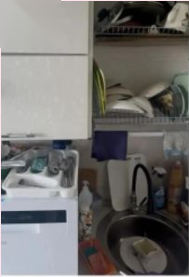
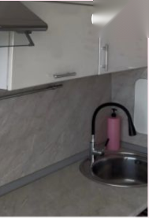
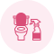
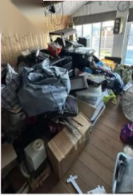
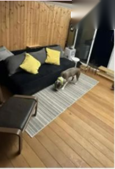
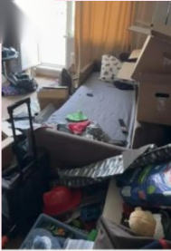
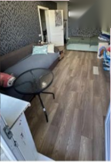

ДоПослеКухня
Регулярный уход за домом: пол, пыль с мебели, кухня, санузел,
зеркала, техника снаружи, коридор и вынос мусора.
Помогает сохранять чистоту без глубокой очистки каждый раз —
и поддерживать результат генеральной уборки.
Базовый состав — включён в
стоимость независимо от площади.
Зависят от площади и состояния
квартиры.
Обычно 2—5 часов: зависит от площади, количества комнат и текущего состояния помещения.
Приезжает 1—2 клинера со своим инвентарём и средствами — готовить ничего не нужно.
Смету собираем под вашу квартиру после фото или осмотра

Полное мытьё окон в стандартную уборку не входит. В рамках уборки делаем:
✓Протирание зеркал
✓Свежие следы с доступных стеклянных поверхностей
✓Стеклянные столы и мебельные элементы
Поддерживающая уборка — про регулярный уход, а не про глубокую очистку сильно загрязнённых поверхностей. Эти работы можно заказать отдельно.
Посмотреть генеральную уборкуЧестно скажем, если сначала стоит сделать генеральную
В таких случаях лучше начать с генеральной уборки, а затем перейти на регулярную поддерживающую — результат будет держаться дольше.
Генеральная уборкаПериодичность зависит от количества проживающих, детей и питомцев, площади квартиры и
образа жизни. Подберём вместе — и в любой момент поменяем.
Большая семья, малыши или несколько питомцев — дом не успевает остыть от жизни.
от 90 м²Оптимальный ритм для семьи: пыль, полы, кухня и санузел не успевают накопиться.
40—90 м²Один-два человека, аккуратный быт и желание сохранить результат генеральной уборки.
до 60 м²Разово, перед гостями, по будням или раз в месяц — соберём расписание под вас.
ОбсудитьПлощади указаны ориентировочно — итоговый график подбираем по вашей квартире
Оставляете заявку на сайте или связываетесь удобным способом.
Площадь, количество комнат, объём работ и пожелания.
При необходимости присылаете фотографии основных зон.
Заранее определяем состав уборки и дополнительные услуги, фиксируем стоимость.
Клинер приезжает в согласованное время со всем необходимым и выполняет работы.
Принимаете работу, при желании подбираем удобную периодичность.
Квартиры клиентов после поддерживающей уборки


ДоПосле

ДоПосле

ДоПослеВсё привозим с собой — покупать и готовить ничего не нужно
Подбираем с учётом материала поверхности и характера загрязнения:
·для мытья пола
·для кухни и санузла
·для стекла и зеркал
·для лёгкого известкового налёта
·обезжиривающие средства
·дезинфицирующие при необходимости

Ваше доверие — наша лучшая награда
Вызывала клинера на генеральную
уборку кухни. Перед заказом всё
обсудили: что убираем, какими
средствами будем пользоваться. Всё
очень понравилось — я находилась дома
и видела, как быстро и качественно
производится уборка. Все
договорённости были соблюдены,
девушка приехала без опозданий. В
общем, я в восторге! Рекомендую!
Спасибо большое за генеральную
уборку в ванной комнате для моих
родителей! Всё чисто, всё блестит! С
менеджером договорились по телефону,
клинер приехала без опозданий, день в
день — клининг нужен был срочно. Я
попросила использовать только эко-
средства, привезли с собой. Всю новую
ветошь при мне вскрывали — это очень
впечатляет. Обязательно пригласим
следующий раз!
Заказывала уборку квартиры, клинер
приехала вовремя, сразу нашли общий
язык. Все средства были привезены
клинером: новые губки и тряпки,
хорошие моющие средства. Результат
превзошёл ожидания, воздух в квартире
сразу стал чище. Я так идеально не
уберусь! Буду постоянным клиентом.
Всё прошло замечательно, дедушку
приглашаю не первый раз! Быстро,
аккуратно, конструктивно. Спасибо!
Оставьте заявку — уточним объём работ, подберём
удобную периодичность и согласуем стоимость до выезда.
✓Приезжаем со своим инвентарём и средствами
✓Можно разово или по регулярному графику
✓Работаем в Москве и области
О поддерживающей уборке — коротко и по делу